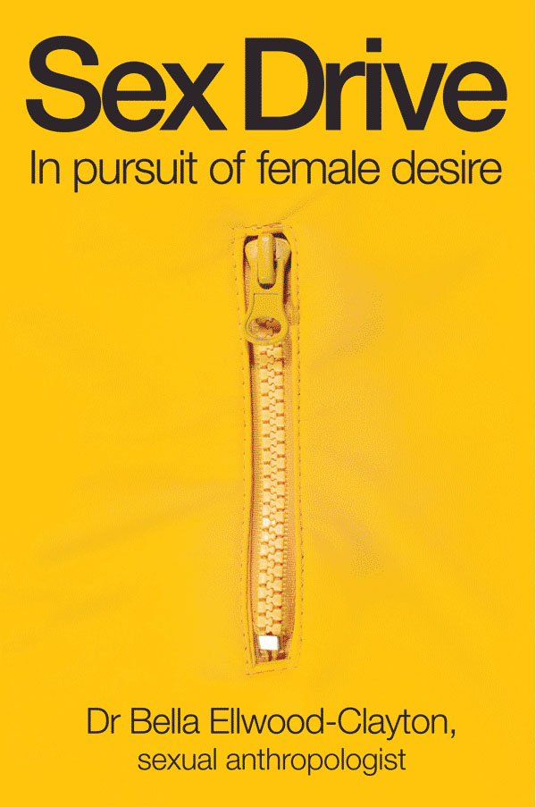

Bella Ellwood-Clayton was born in Melbourne, Australia; daughter of avant garde composer and playwright Syd Clayton. At a young age, Bella moved to Vancouver, Canada. During high school Bella modeled at Carol Jackson Modeling Agency, taking part in fashion shows, television commercials, and magazine photoshoots.
Bella relocated to Montreal where she completed a Bachelor of Arts in 1999 from
Concordia University, majoring in anthropology. Her honours thesis examined beauty cross-culturally. She received first class honours and was the recipient of the
Mark Doughty Scholarship.
Soon after, with a crew from
National Geographic, Bella took to the jungle to explore tattoo and social change in the Mentawai Islands of Indonesia. This documentary continues to air from a wide range of international locations.
In 2000 Bella was offered a full PhD scholarship. She conducted an ethnography in the central Philippines about young women 's sexual and reproductive health. As the Philippines is the texting capital of the world, her research followed suit. Bella became regarded as an international mobile phone expert, speaking about love and technology at conferences in Asia, Europe, America and Australia, teaching undergraduate classes about mobile telephony in Korea, and publishing her work in a number of prestigious academic anthologies.
Throughout her postgraduate degree Bella was the recipient of numerous grants, scholarships and traveling bursaries. In 2004 she completed her thesis from The Key Centre for Women 's Health in Society, WHO Collaborating Centre,
The University of Melbourne.
After spending time in Canada working as an 'extra ' and body double for film, and scripting a novel, Bella returned to Australia to write a sex and relationship column for the newspaper
mX - published in Sydney, Melbourne and Brisbane. She accepted the role of
Sextxt ambassador, a service that provides sexual health information to Australian youth.
Bella regularly contributes to magazines such as
Women 's Health and appears on radio, television and gives public talks. You 'll find her discussing relationships on channel 7 's
Sunrise or channel 10 's
The Project, penning articles for Sunday Life magazine, which appears in the Melbourne
Age and Sydney
Sun-Herald or offering advice about love and sex on popular radio station,
Triple M. She recently started blogging for
The Huffington Post.
Her book about female sexuality, '
Sex drive: in pursuit of female desire' was published with critical success last year in Australia (
Allen & Unwin) - and will hit the American market on June 1st. Bella also provides individual and couple consultations. She is married to a real life superhero and has two young children.

To have Dr Bella speak at your organization, conference, television or radio program,
or for more info, send your request to publicity@drbella.com.au
Bella enjoys discussing love, gender, dating, sexual desire and health,
sex drugs, technology, and how to live sensually.
|